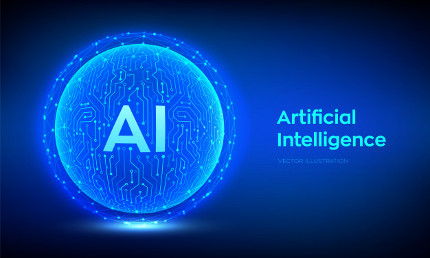

Definition of AI
AI or artificial intelligence is the simulation of human intelligence processes by machines, especially computer systems. These processes include learning, reasoning and self-correction. Some of the applications of AI include expert systems, speech recognition and machine vision. Artificial Intelligence is advancing dramatically. It is already transforming our world socially, economically and politically.
AI was coined by John McCarthy, an American computer scientist, in 1956 at The Dartmouth Conference where the discipline was born. Today, it is an umbrella term that encompasses everything from robotic process automation to actual robotics. AI can perform tasks such as identifying patterns in the data more efficiently than humans, enabling businesses to gain more insight out of their data. With the help from AI, massive amounts of data can be analyzed to map poverty and climate change, automate agricultural practices and irrigation, individualize healthcare and learning, predict consumption patterns, streamline energy-usage and waste-management.
